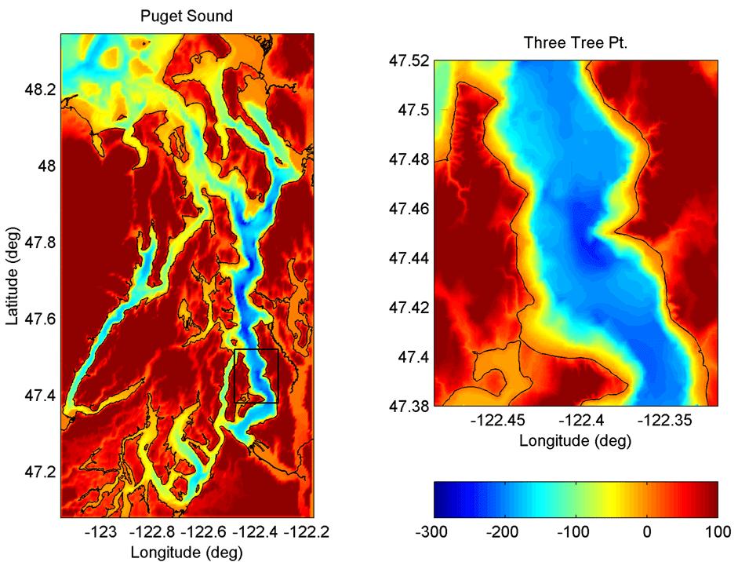
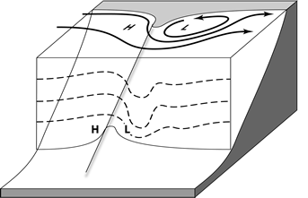
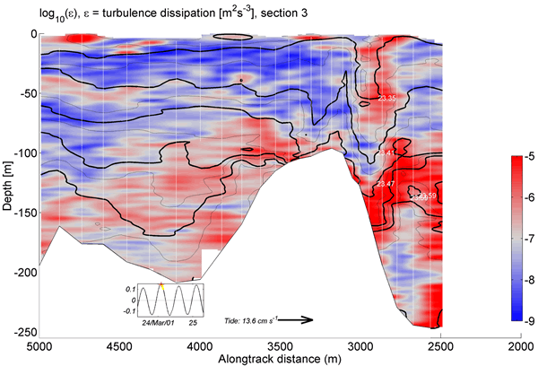
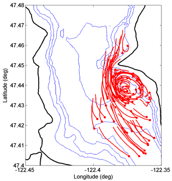
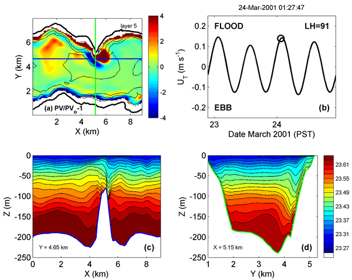

Flow Over Rough Topography
Form Drag, Internal Waves, and Headland Eddies at Three Tree Point
Mixing is an essential process in coastal and estuarine ecosystems, bringing nutrient-rich deeper water to the surface. This mixing derives its energy from tidal- and wind-driven currents. Our research on flow over rough topography is focused on the mechanisms by which the large scale tidal flow is broken up into smaller, more chaotic motions which eventually feed turbulence. Our study site is Three Tree Point in Puget Sound, WA, a headland just West of SeaTac airport.
This work has been supported by grants from NSF and the ONR Scholar of Oceanography programs. Collaborators: Mike Gregg (UW/APL), Geno Pawlak (UH), Kate Edwards (UW/APL), Jim Moum and colleagues (OSU). Graduate Students: Ryan McCabe and Sally Warner.
|  | Three Tree Point (TTP) is a 1 km scale headland on the Main Basin of Puget Sound. Subsurface it looks like a sharp ridge, angling down across the channel with a slope of 1:5, to a depth of 200 m. The main currents here are tidal, mixed semi-diurnal in character, moving up and down Main Basin past TTP at about 15 cm/s. |
Tidal flow past TTP is deformed in two ways. At the surface the flow accelerates to over twice the background tidal speed, and separates at the Point, forming a headland eddy. Deeper in the water column the flow has another choice, as it may flow "over" the sloping ridge instead of having to flow "around" it. In this case isopycnal surfaces are deformed, forming a lee wave. The Rossby number of the eddy is about 10, so this flow is very far from geostrophic balance. Both processes create a pattern of greater bottom pressure on the face of the ridge, and lower pressure on the lee. Integrating the along-channel momentum equation over a volume containing the ridge, this pressuer difference appears as a "form drag" or "pressure drag" |
 |
|  | The internal wave due to flow "over" the sloping ridge is captured beautifully here in a section made by Jim Moum's Chameleon profiler. FLow is from left to right. Black lines are density surfaces, and red is higher turbulent dissipation. Note the intense lee wave, pulling surface water down 50 m. |
| The headland eddy due to flow "around" the Point is seen here in drifter tracks from June 2002. This is a flood eddy, which is flow North to South in this image. There about 90 tracks shown, from drifters drogued at 20 m depth. We actually only had 10 drifters out each day, but then lined up tracks from 9 days by aligning them relative to the time of maximum flood on each day. In his Master's thesis, Ryan McCabe used these drifter tracks to map out the evolving surface height field associated with the eddy, and thus was able, for the first time, to observationally determine the portion of the form drag due to the surface height deformations, which are on the order of a few cm. The surface height is low in the center of the eddy. Each red track in this figure has the drifter location just after max flood as a dot, and then has a tail for the last hour of its track. |  |
|  |
| We use the Hallberg Isopycnic Model to simulate the flow at TTP. This figure shows (upper left panel) the potential vorticity, normalized by f, in a near-surface isopycnal layer. The frame is near max floos in March 2001 (upper right panel), similar to when the Chameleon section above was taken. Along-channel and cross-channel density sections are shown in the botton panels showing the familiar lee wave (left). The lower right panel shows some completely unexpected cross-channel structure, which we believe is associated with the complex interactions between the wave and the eddy here. |
REFERENCES
Idealized Theory, Modeling & Lab Experiments:
- MacCready, P. and G. Pawlak (2001) Stratified Flow along a Rough Slope: Separation Drag and Wave Drag. J. Phys. Oceanogr., 31, 2824-2839
- Pawlak, G. and P. MacCready (2002) Oscillatory flow across an irregular boundary. J. Geophys. Res., 107, 4-1 to 4-17.
Three Tree Point Observations & Analysis:
- Pawlak, G., P. MacCready, K. A. Edwards, R. McCabe (2003) Observations on the evolution of tidal vorticity at a stratified deep water headland. Geophys. Res. Lett., 30(24), 2234, 10.1029/2003GL018092.
- Edwards, K. A., P. MacCready, J. N. Moum, G. Pawlak, J. Klymak, and A. Perlin (2004) Form Drag and Mixing due to Tidal Flow past a Sharp Point. J. Phys. Oceanogr., 34, 1297-1312.
- McCabe, R., P. MacCready, and G. Pawlak (2006) Form Drag due to Flow Separation at a Headland. J. Phys. Oceangr., 36, 2136-2152.
- Canals, M., G. Pawlak, and P. MacCready (2009) Tilted Baroclinic Tidal Vorticies. J. Phys. Oceanogr., 39, 333–350.
Conference Proceedings:
- MacCready, P., G. Pawlak, K. A. Edwards, R. McCabe (2003) Form Drag on Ocean Flows. Proceeding of the 13th ‘Aha Huliko’a Hawaiian Winter Workshop on “Near Boundary Processes and their Parameterization," P. Muller and D. Henderson, Eds., SOEST Special Publication, Univ. of Hawaii, 119-130.
- G. Pawlak, P. MacCready and R. McCabe (2003) Evolution of Vortical Flow Structure in an Ocean Boundary Process. (12 pp.). Proceeding of the 13th ‘Aha Huliko’a Hawaiian Winter Workshop on “Near Boundary Processes and their Parameterization," P. Muller and D. Henderson, Eds., SOEST Special Publication, Univ. of Hawaii, 131-142.